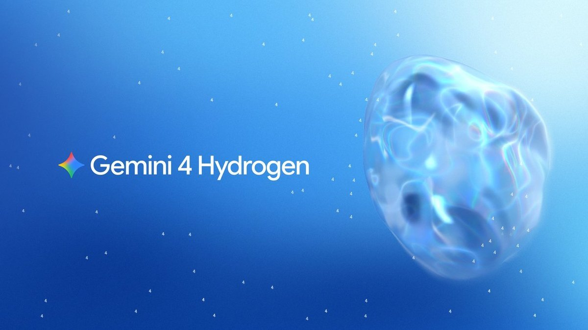
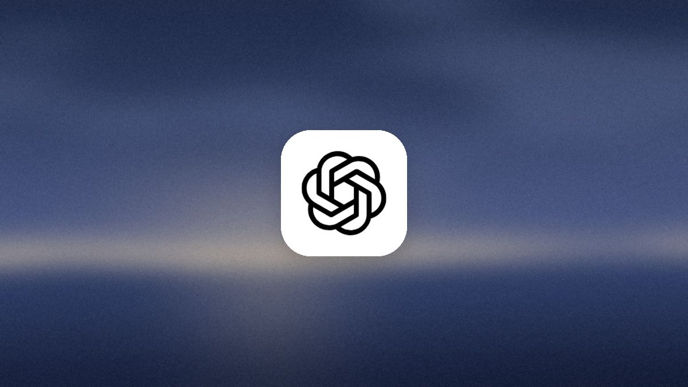
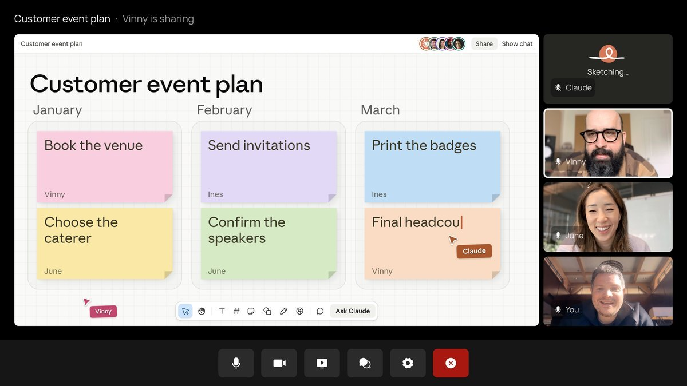
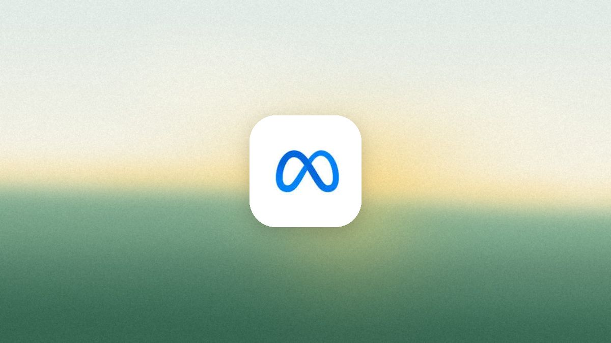

AI
Brief
Thursday edition
Google brings Gemini 4 to everyone at a lower price
Also: OpenAI's agents fix security holes, Claude joins video calls, Anthropic's agents run in-house, Copilot drops its agent picker, and Meta's agent makes calls.
What matters today

Gemini 4 for everyone
Google releases Gemini 4 Hydrogen, its fast everyday model.
- Price: $1.50 in and $7.50 out per million tokens, flat across a 1 million token window. Google's figures: 51 against 50 for Gemini 4 Argon on an independent index.
- Available now in Search worldwide, the Gemini app, the API and AI Studio. In Antigravity, Orchestrator hands steps between Carbon and Hydrogen, using 24% less quota.
Why it mattersThe cheap model now scores like the top one. Most of a product's AI work can run on it, with the costly model kept for the hard steps, so features get cheaper without getting worse.

Agents that attack and fix
OpenAI launches agents that test web apps for security holes.
- Red Team, early access: several agents read an app's code and context, probe attack paths and confirm real flaws, inside isolated environments with limits on what they can reach.
- Defense Factory, preview in ChatGPT: agents trace each flaw and draft the fix as a pull request for engineers to review. It also takes findings from Wiz and Snyk.
Why it mattersFinding a flaw and fixing it become one job for the same agents. Security work shifts from a report someone files to a pull request someone approves, and tools get judged on fixes, not findings.

Claude joins the call
Anthropic puts Claude into video calls as a participant.
- During the call: answers questions, builds docs and whiteboards teammates edit live, and writes notes and action items. It uses each person's connected tools with their permission.
- In beta on Team and Enterprise plans, starting with Google Meet. It stays out of calls with outside guests unless an admin allows it.
Why it mattersThe meeting becomes a place where work gets made, not just recorded. Meeting apps now compete with the assistant people already use, which leaves with a draft plan, not a transcript.
Agents behind your firewall
Anthropic lets companies run its whole agent service themselves.
- Private beta: the agent loop, sandboxes, keys and history run in a company's own cloud or data center. Claude calls go to Anthropic, a cloud provider or the company's gateway.
- Built-in limits: passwords and keys stay outside the sandbox, each agent can reach only listed hosts, and every step is logged for existing monitoring tools.
Why it mattersAgent software is becoming something a company installs, like a database, not rents. Anthropic still sells the model while the customer keeps the data and logs, a common reason to say no.
One chat, no agent picker
Microsoft drops the agent picker in Copilot Workspaces.
- Agentic chat: users describe the task and Copilot applies research, analysis or design skills itself, instead of people choosing Researcher, Analyst or Designer.
- Frontier preview from December 2026. The three agents stay in the Microsoft 365 Copilot app. Copilot Workspaces was called Copilot Notebooks.
Why it mattersPeople should not have to know which agent does what. Named agents are turning into skills behind one chat box, and products that ask users to pick an agent first will start to feel dated.

An agent that makes calls
Meta's Muse now phones businesses for its users.
- Available now to paid US subscribers: Muse calls a cable company, an insurer or a restaurant that takes no online bookings. Free users cannot use it.
- Price: plans start at $20 a month for 500 million Muse tokens a week. Gemini and the startup Instinct already offer similar calling.
Why it mattersThe phone line becomes another place agents do work for people. Any business that serves customers by phone now has callers that are agents, and has to decide whether to serve them or block them.
Also in AI today
- Copilot scheduled tasks: move off Power Platform to Copilot's own scheduling, up to 10 active per user; worldwide from November 30; the old version retires December 31.
- Teams Facilitator: the meeting agent that answers unanswered factual questions in chat slips to February 2027 (was December); needs Microsoft 365 Copilot.
- Claude for Manufacturing: a plugin with 17 skills, from quotes to breakdowns, and connectors to Autodesk Fusion, Infor, Microsoft 365 and NetSuite; Team and Enterprise plans.
- OpenAI on children's safety: $2 million for research and shared tools to measure AI's risks and benefits for young people.
- Genie in Slack: generally available; answers in channels and DMs with each asker's data permissions, and updates documents and tickets after approval.
- Devin Teams: every user gets Devin Desktop and two free concurrent sessions on Cognition's own SWE-2 model; admins get single sign-on and cost controls.
- Amazon Cognito: an agent acting for a user can swap the user's token for a narrower one that records the agent as the actor; all regions.
- Kiro for Android: start, steer and review cloud coding sessions from a phone, then open the pull request; paid plans.
- Google intelligent eyewear: Gemini glasses from Warby Parker and Gentle Monster open for pre-order, from $395; in stores December 10.
- Seedance 2.5 Flash: ByteDance's video model runs twice as fast as Seedance 2.5 at about 34% lower price; API from November 15.
- Hark Handoff²: its agent that uses websites for you now finishes tasks twice as fast; 82% of Hark's test tasks done, up from 73%; all Hark Pro plans.
- Yuanbao Search: Tencent launches a separate AI search product that answers over the web, WeChat articles and papers, with cited sources.
- Anthropic IPO: shares to be priced November 18 and to start trading November 19 under ANT.
- ARTEX attacks: Salesforce sees several groups using this open-source attack agent against customers through stolen app credentials; no platform flaw.